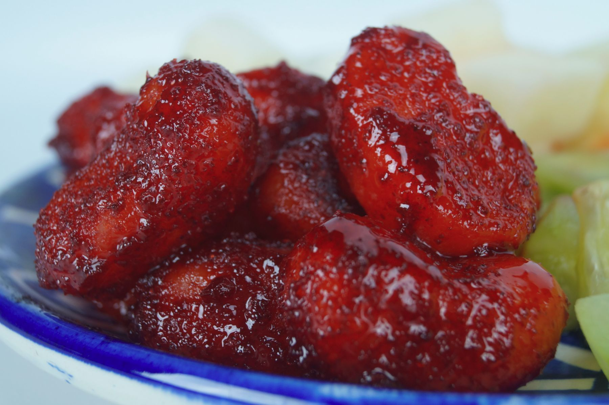

Productos

Deliciosa piña seca con chilito, picosita y saladita, ¡lokoalate de sabor!

Perfecta con cualquier bebida, dale una escarcha de sabor Sabrorico a tus bebidas

Gomita de Sandia cubierta con delicioso y picosito chamoy Sabrorico, ¡Deliciosas!

Deliciosa gomita de naranja con el delicioso toque secreto Sabrorico

La favorita de todas las edades, la clásica gomita de durazno con el delicioso sabor Sabrorico